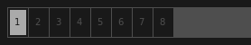
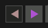
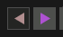

In Giada, things usually happen because you have clicked on a channel or pressed its corresponding key (both from keyboard or MIDI device). For example, if you click a channel play button  the channel starts to play. However the final behavior might vary, depending on various other factors such as the play mode or the internal channel status.
the channel starts to play. However the final behavior might vary, depending on various other factors such as the play mode or the internal channel status.
This section is focused on general interactions; more information on each type of channel can be found in Channels and samples and Channels and MIDI chapters.

The sequencer is the tool that basically handles the live performance. Each cell is a beat and beats are grouped into bars. The number of beat/bars, the speed and the size of the main pattern can be adjusted through the beat tools  , while play/stop and rewind buttons  control the sequencer and its position.
, while play/stop and rewind buttons  control the sequencer and its position.
When the sequencer is running you are able to play your song, handle some kind of channels, record actions and much more. In particular, it affects:
sample channels in loop mode;
sample channels in one shot mode with actions recorded;
MIDI channels.
When the sequencer is running you can also benefit from the power of the live quantizer, which helps you to align your keystrokes to each beat. On the other hand, when the sequencer is off the channels listed above don't play immediately: they wait (the buttons start to blink) until the sequencer starts over from the first beat.
You can still operate with sample channels in one shot mode, with or without actions recorded and they will play as soon as the corresponding key is pressed. We saw this style of playing in Performing 1 and we called it Giada as a sample player.
The following table shows how can you interact with the various tools of the sequencer. You can change the default keyboard bindings in the Configuration window.
| action | alternate action | effect 1 |
|---|---|---|
| backspace | click on rewind button | sequencer rewind to beat 1 |
| spacebar | click on play button | sequencer start/stop |
| enter | click on action recorder button  | action recorder start/stop |
| end | click on input recorder button | live sampler start/stop |